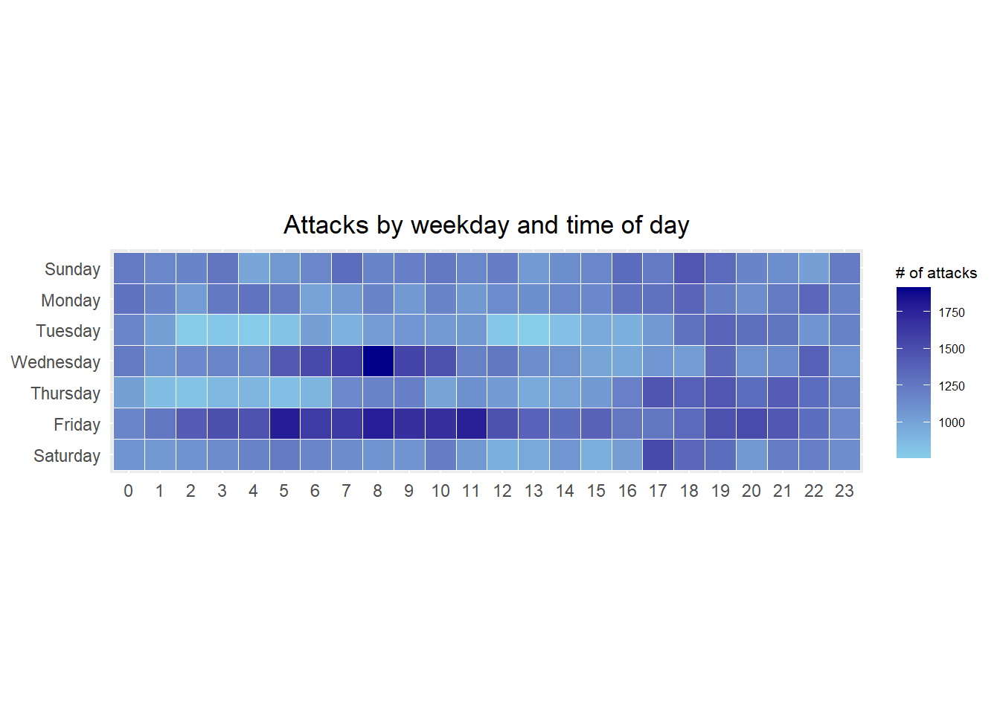
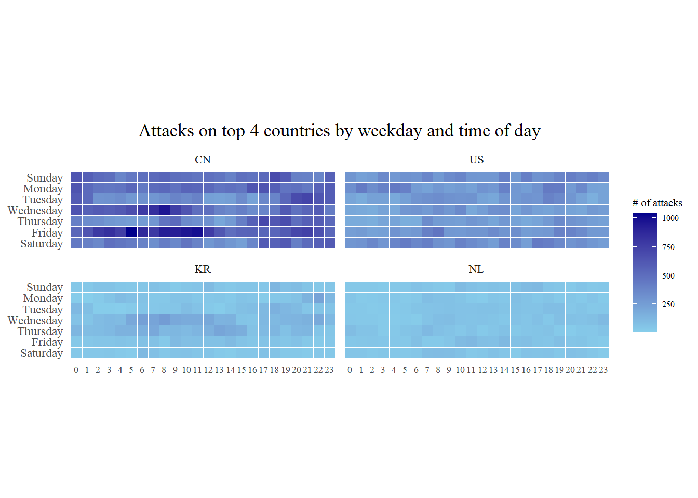
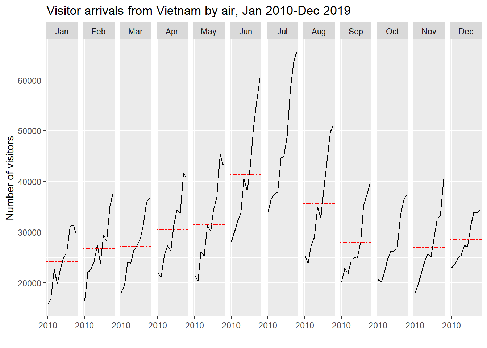
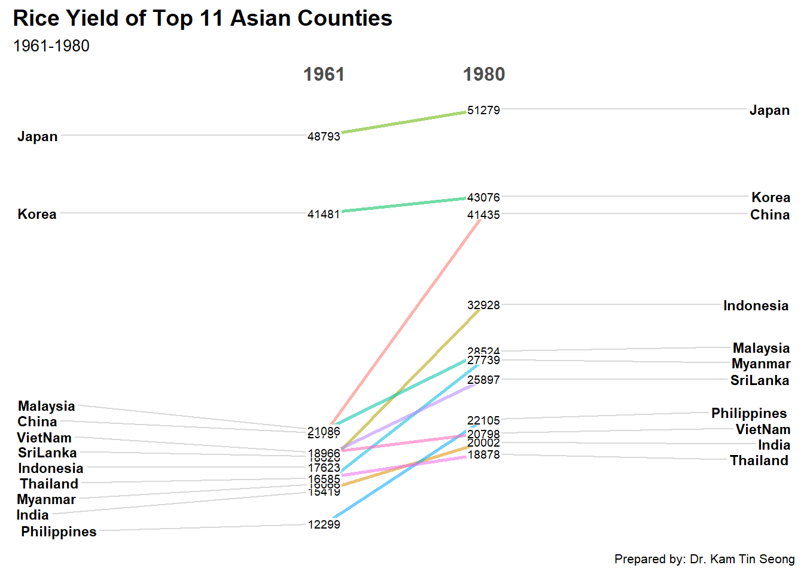
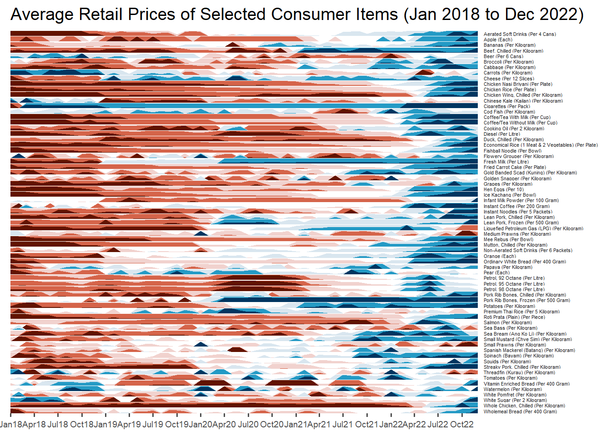

pacman::p_load(scales, viridis, lubridate, ggthemes, gridExtra, readxl, knitr, data.table, CGPfunctions, ggHoriPlot, tidyverse)Hands-on_Ex07
Import package, data
attacks <- read_csv("data/eventlog.csv")Rows: 199999 Columns: 3
── Column specification ────────────────────────────────────────────────────────
Delimiter: ","
chr (2): source_country, tz
dttm (1): timestamp
ℹ Use `spec()` to retrieve the full column specification for this data.
ℹ Specify the column types or set `show_col_types = FALSE` to quiet this message.kable() can be used to review the structure of the imported data frame
kable(head(attacks))| timestamp | source_country | tz |
|---|---|---|
| 2015-03-12 15:59:16 | CN | Asia/Shanghai |
| 2015-03-12 16:00:48 | FR | Europe/Paris |
| 2015-03-12 16:02:26 | CN | Asia/Shanghai |
| 2015-03-12 16:02:38 | US | America/Chicago |
| 2015-03-12 16:03:22 | CN | Asia/Shanghai |
| 2015-03-12 16:03:45 | CN | Asia/Shanghai |
Data preparation
Deriving weekday and hour of day fields
quiet = TRUE: suppress warning message
ymd_hms: transform into date format
make_hr_wkday <- function(ts, sc, tz) {
real_times <- ymd_hms(ts,
tz = tz[1],
quiet = TRUE)
dt <- data.table(source_country = sc,
wkday = weekdays(real_times),
hour = hour(real_times))
return(dt)
}Deriving the attacks tibble data frame
- do(make_hr_wkday..): apply the function by do()
wkday_levels <- c('Saturday', 'Friday',
'Thursday', 'Wednesday',
'Tuesday', 'Monday',
'Sunday')
attacks <- attacks %>%
group_by(tz) %>%
do(make_hr_wkday(.$timestamp,
.$source_country,
.$tz)) %>%
mutate(wkday = factor(
wkday, levels = wkday_levels),
hour = factor(
hour, levels = 0:23))kable(head(attacks))| tz | source_country | wkday | hour |
|---|---|---|---|
| Africa/Cairo | BG | Saturday | 20 |
| Africa/Cairo | TW | Sunday | 6 |
| Africa/Cairo | TW | Sunday | 8 |
| Africa/Cairo | CN | Sunday | 11 |
| Africa/Cairo | US | Sunday | 15 |
| Africa/Cairo | CA | Monday | 11 |
Building the Calendar Heatmaps
grouped <- attacks %>%
group_by(wkday,hour) %>%
count(wkday,hour) %>%
ungroup() %>%
na.omit() #omit na values
glimpse(grouped)Rows: 168
Columns: 3
$ wkday <fct> Saturday, Saturday, Saturday, Saturday, Saturday, Saturday, Satu…
$ hour <fct> 0, 1, 2, 3, 4, 5, 6, 7, 8, 9, 10, 11, 12, 13, 14, 15, 16, 17, 18…
$ n <int> 1081, 1053, 1088, 1130, 1183, 1226, 1163, 1128, 1083, 1077, 1218…geom_tile: make the grid as white color with size 0.1
coord_equal: equal size of each grid
ggplot(grouped,
aes(hour,
wkday,
fill = n)) +
geom_tile(color = "white",
size = 0.1) +
coord_equal() +
scale_fill_gradient(name = "# of attacks",
low = "skyblue",
high = "darkblue") +
labs(x = NULL,
y = NULL,
title = "Attacks by weekday and time of day") +
theme(axis.ticks = element_blank(),
plot.title = element_text(hjust = 0.5),
legend.title = element_text(size = 8),
legend.text = element_text(size = 6) )Warning: Using `size` aesthetic for lines was deprecated in ggplot2 3.4.0.
ℹ Please use `linewidth` instead.
Plotting Multiple Calendar Heatmaps
count the number of attacks by country,
calculate the percent of attackes by country
attacks_by_country <- attacks %>%
group_by(source_country) %>%
count(source_country) %>%
arrange(desc(n))
head(attacks_by_country)# A tibble: 6 × 2
# Groups: source_country [6]
source_country n
<chr> <int>
1 CN 85243
2 US 48684
3 KR 12648
4 NL 8572
5 VN 6340
6 TW 3469extract the attack records of the top 4 countries
top4 <- attacks_by_country$source_country[1:4]
top4_attacks <- attacks %>%
filter(source_country %in% top4) %>%
count(source_country, wkday, hour) %>%
ungroup() %>%
mutate(source_country = factor(
source_country, levels = top4)) %>%
na.omit()
head(top4_attacks)# A tibble: 6 × 5
tz source_country wkday hour n
<chr> <fct> <fct> <fct> <int>
1 Africa/Cairo CN Saturday 3 1
2 Africa/Cairo CN Saturday 5 1
3 Africa/Cairo CN Friday 6 1
4 Africa/Cairo CN Friday 20 1
5 Africa/Cairo CN Thursday 21 3
6 Africa/Cairo CN Thursday 23 1top4 <- attacks_by_country$source_country[1:4]
top4_attacks <- attacks %>%
filter(source_country %in% top4) %>%
group_by(source_country, wkday, hour) %>%
count(source_country, wkday, hour) %>%
ungroup() %>%
mutate(source_country = factor(
source_country, levels = top4)) %>%
na.omit()
top4_attacks# A tibble: 672 × 4
source_country wkday hour n
<fct> <fct> <fct> <int>
1 CN Saturday 0 438
2 CN Saturday 1 401
3 CN Saturday 2 358
4 CN Saturday 3 487
5 CN Saturday 4 457
6 CN Saturday 5 429
7 CN Saturday 6 393
8 CN Saturday 7 330
9 CN Saturday 8 421
10 CN Saturday 9 361
# ℹ 662 more rowstheme_tufte() : remove unnecessary chart junk (here remove grid for each country)
coord_equal() is used to ensure the plot will have an aspect ratio of 1:1.
scale_fill_gradient() function is used to creates a two colour gradient (low-high)
ggplot(top4_attacks,
aes(hour,
wkday,
fill = n))+
geom_tile(color = "white",
size = 0.1)+
theme_tufte() +
coord_equal() +
scale_fill_gradient(name = "# of attacks",
low = "skyblue",
high = "darkblue") +
facet_wrap(~source_country, ncol = 2) +
labs(x = NULL, y = NULL,
title = "Attacks on top 4 countries by weekday and time of day") +
theme(axis.ticks = element_blank(),
axis.text.x = element_text(size = 7),
plot.title = element_text(hjust = 0.5),
legend.title = element_text(size = 8),
legend.text = element_text(size = 6) )
Plotting Cycle Plot
air <- read_excel("data/arrivals_by_air.xlsx")kable(head(air))| Month-Year | Republic of South Africa | Canada | USA | Bangladesh | Brunei | China | Hong Kong SAR (China) | India | Indonesia | Japan | South Korea | Kuwait | Malaysia | Myanmar | Pakistan | Philippines | Saudi Arabia | Sri Lanka | Taiwan | Thailand | United Arab Emirates | Vietnam | Belgium & Luxembourg | CIS | Finland | France | Germany | Ireland | Italy | Netherlands | Spain | Switzerland | United Kingdom | Australia | New Zealand |
|---|---|---|---|---|---|---|---|---|---|---|---|---|---|---|---|---|---|---|---|---|---|---|---|---|---|---|---|---|---|---|---|---|---|---|---|
| 2000-01-01 | 3291 | 5545 | 25906 | 2883 | 3749 | 33895 | 13692 | 19235 | 65151 | 59288 | 21457 | 507 | 27472 | 1177 | 2150 | 8404 | 1312 | 3922 | 15766 | 12048 | 1318 | 1527 | 1434 | 2703 | 1634 | 4752 | 12739 | 1292 | 3544 | 4962 | 925 | 3731 | 28986 | 34616 | 5034 |
| 2000-02-01 | 2357 | 6120 | 28262 | 2469 | 3236 | 34344 | 19870 | 18975 | 37105 | 58188 | 19634 | 199 | 29084 | 1161 | 2496 | 9128 | 623 | 3988 | 24861 | 12745 | 899 | 2269 | 1596 | 1182 | 1297 | 6391 | 13093 | 1200 | 2897 | 5054 | 747 | 3980 | 35148 | 26030 | 3938 |
| 2000-03-01 | 4036 | 6255 | 30439 | 2904 | 3342 | 27053 | 17086 | 21049 | 44205 | 74426 | 20719 | 386 | 30504 | 1355 | 2429 | 11691 | 1578 | 4259 | 18767 | 16971 | 1474 | 2034 | 1548 | 1088 | 1220 | 5528 | 13645 | 1368 | 2717 | 4950 | 935 | 3576 | 36117 | 31119 | 4668 |
| 2000-04-01 | 4241 | 4521 | 25378 | 2843 | 5117 | 30464 | 22346 | 26160 | 45480 | 49985 | 17489 | 221 | 34478 | 1593 | 2711 | 14141 | 705 | 6579 | 22735 | 20397 | 1284 | 2420 | 1592 | 1012 | 1208 | 5544 | 13366 | 1345 | 2512 | 4149 | 941 | 3850 | 33792 | 34824 | 6890 |
| 2000-05-01 | 2841 | 3914 | 26163 | 2793 | 4152 | 30775 | 16357 | 35869 | 38350 | 48937 | 19398 | 164 | 34795 | 1397 | 2594 | 13305 | 679 | 4625 | 18399 | 15769 | 1042 | 1833 | 1167 | 660 | 743 | 4225 | 10878 | 1067 | 2205 | 3643 | 764 | 3025 | 23377 | 33139 | 7006 |
| 2000-06-01 | 2776 | 3487 | 28179 | 3146 | 5018 | 26720 | 18133 | 31314 | 47982 | 53798 | 17522 | 440 | 34660 | 1715 | 2924 | 10555 | 2749 | 4740 | 21042 | 17217 | 1545 | 2480 | 1170 | 712 | 982 | 4047 | 9054 | 1363 | 2196 | 3544 | 855 | 2580 | 21769 | 35731 | 7634 |
Derive month and year
air$month <- factor(month(air$`Month-Year`),
levels = 1:12,
labels = month.abb,
ordered = TRUE)
air$year <- year(ymd(air$`Month-Year`))Extracting the target country
Next, the code chunk below is use to extract data for the target country (i.e. Vietnam)
Vietname <- air %>%
select(`Vietnam`,
month,
year) %>%
filter(year >=2010)
head(Vietname)# A tibble: 6 × 3
Vietnam month year
<dbl> <ord> <int>
1 15781 Jan 2010
2 16335 Feb 2010
3 18061 Mar 2010
4 22154 Apr 2010
5 21461 May 2010
6 28146 Jun 2010Computing year average arrivals by month
hline_data <- Vietname %>%
group_by(month) %>%
summarise(avgvalue = mean(`Vietnam`),.groups = "drop")
head(hline_data)# A tibble: 6 × 2
month avgvalue
<ord> <dbl>
1 Jan 24113.
2 Feb 26693.
3 Mar 27200.
4 Apr 30391.
5 May 31453.
6 Jun 41325.Plotting the cycle plot
ggplot()+
geom_line(data = Vietname,
aes(x = year,
y = `Vietnam`,
group = month),color = "black")+
geom_hline(aes(yintercept = avgvalue ),
data = hline_data,
linetype = 6,
color = "red",
size = 0.5)+
facet_grid(~month)+
labs(axis.text.x = element_blank(),
title = "Visitor arrivals from Vietnam by air, Jan 2010-Dec 2019")+
xlab("")+
ylab("Number of visitors")+
scale_x_continuous(breaks = seq(from = 2010, to = 2019, by = 10))
Plotting Slopegraph
Import data
rice <- read_csv("data/rice.csv")Rows: 550 Columns: 4
── Column specification ────────────────────────────────────────────────────────
Delimiter: ","
chr (1): Country
dbl (3): Year, Yield, Production
ℹ Use `spec()` to retrieve the full column specification for this data.
ℹ Specify the column types or set `show_col_types = FALSE` to quiet this message.glimpse(rice)Rows: 550
Columns: 4
$ Country <chr> "China", "China", "China", "China", "China", "China", "Chin…
$ Year <dbl> 1961, 1962, 1963, 1964, 1965, 1966, 1967, 1968, 1969, 1970,…
$ Yield <dbl> 20787, 23700, 26833, 28289, 29667, 31445, 31006, 31868, 314…
$ Production <dbl> 56217601, 65675288, 76439280, 85853780, 90705630, 98403990,…Plot a basic slopegraph
*For effective data visualisation design, factor() is used convert the value type of Year field from numeric to factor.
rice %>%
mutate(Year = factor(Year)) %>%
filter(Year %in% c(1961,1980)) %>%
newggslopegraph(Year, Yield,Country,
Title = "Rice Yield of Top 11 Asian Counties",
SubTitle = "1961-1980",
Caption = "Prepared by: Dr. Kam Tin Seong" )
Converting 'Year' to an ordered factor
Time on the Horizon: ggHoriPlot methods
pacman::p_load(ggHoriPlot, ggthemes, tidyverse)averp <- read_csv("data/AVERP.csv") %>%
mutate(Date = dmy(`Date`))Rows: 7452 Columns: 3
── Column specification ────────────────────────────────────────────────────────
Delimiter: ","
chr (2): Date, Consumer Items
dbl (1): Values
ℹ Use `spec()` to retrieve the full column specification for this data.
ℹ Specify the column types or set `show_col_types = FALSE` to quiet this message.glimpse(averp)Rows: 7,452
Columns: 3
$ Date <date> 2014-01-01, 2014-02-01, 2014-03-01, 2014-04-01, 2014…
$ `Consumer Items` <chr> "Wholemeal Bread (Per 400 Gram)", "Wholemeal Bread (P…
$ Values <dbl> 2.05, 2.05, 2.04, 2.04, 2.05, 2.05, 2.05, 2.05, 2.04,…origin: Origin of the horizon plot
horizonscale: Cutpoints of the horizon plot.
panel.spacing.y=unit(0,“lines”): removes the vertical spacing between panels, making them appear more closely stacked together
averp %>%
filter(Date >= "2018-01-01") %>%
ggplot()+
geom_horizon(aes(x= Date, y = Values),
origin = "midpoint",
horizonscale = 6)+
facet_grid(`Consumer Items`~.)+
theme_few()+
scale_fill_hcl(palette = 'RdBu')+
theme(panel.spacing.y=unit(0,"lines"),strip.text.y=element_text(
size=4, angle =0,hjust = 0),
legend.position="None",
axis.text.y=element_blank(),
axis.text.x=element_text(size=7),
axis.title.y=element_blank(),
axis.title.x = element_blank(),
axis.ticks.y = element_blank(),
panel.border = element_blank()
) +
scale_x_date(expand=c(0,0),date_breaks = "3 month",date_labels = "%b%y")+
ggtitle('Average Retail Prices of Selected Consumer Items (Jan 2018 to Dec 2022)')Warning: Using the `size` aesthetic in this geom was deprecated in ggplot2 3.4.0.
ℹ Please use `linewidth` in the `default_aes` field and elsewhere instead.